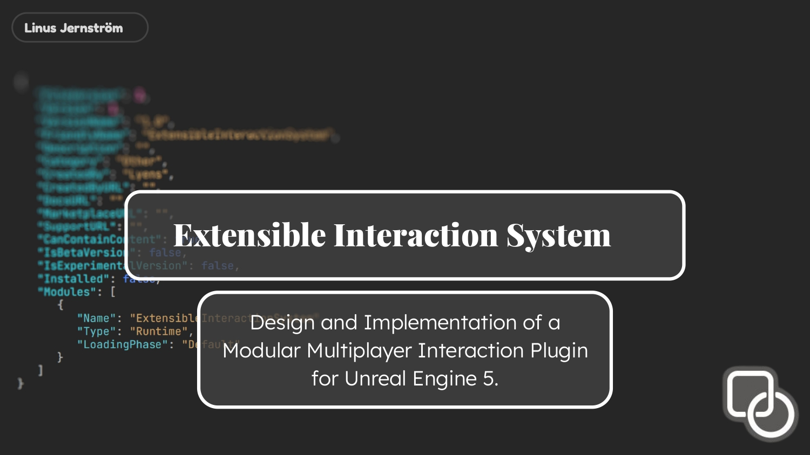
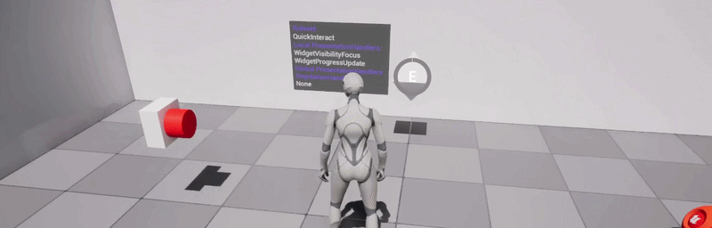
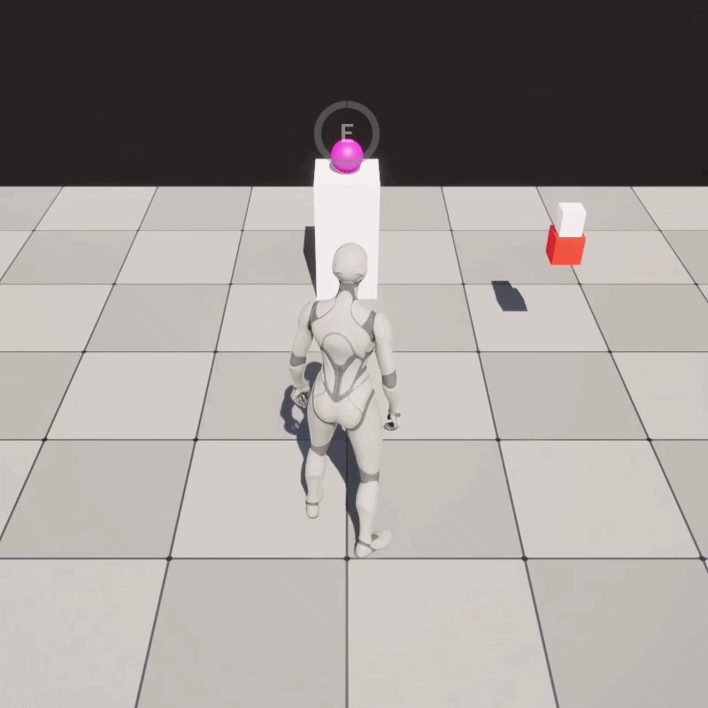
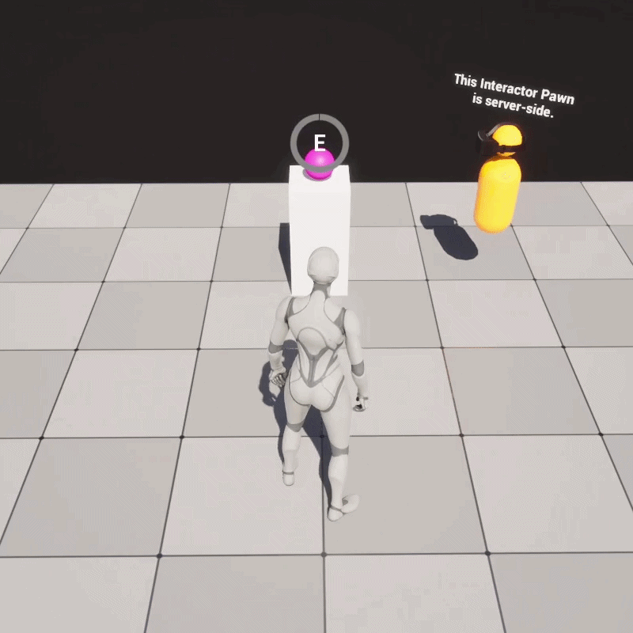
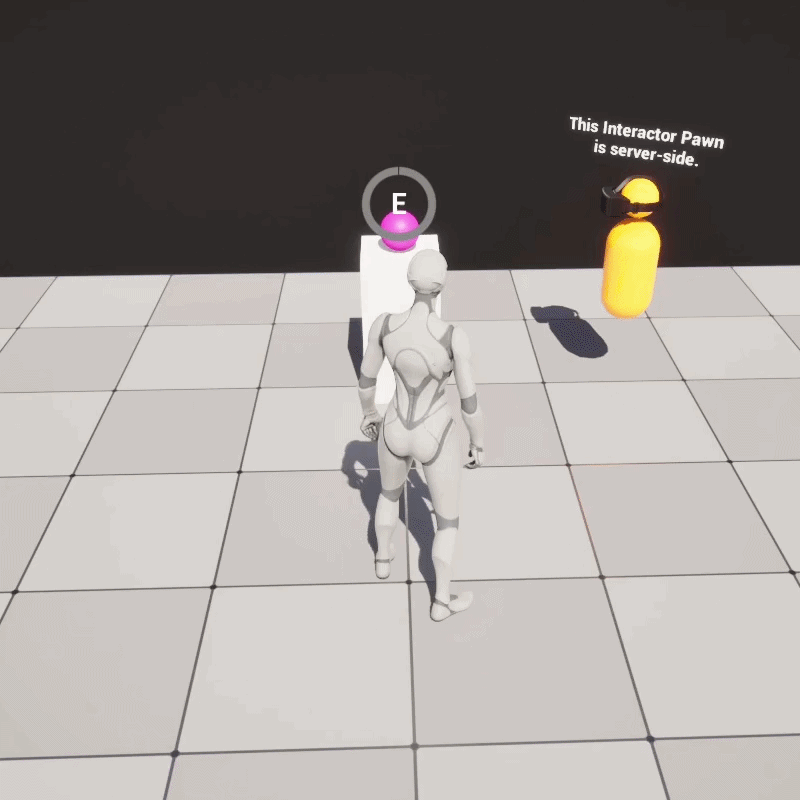

A plugin that handles all your "press E to interact" needs in Unreal Engine 5. The goal was a small, stable core paired with swappable extension points - so the same plugin can slot into any project and adapt to its specific needs without changing any code.
Server-authoritative multiplayer support is built in from the ground up. Focus is local, state is replicated, gating decisions are validated server-side, and visual feedback splits cleanly into per-player and world-wide channels.
Solo Project
Powered by Unreal Engine 5
C++ Plugin with Blueprint Integration
Focus on ease of use, structure and extensibility.
Architectural Clarity: two small core components doing one thing each, plus a few well-defined extension points for seamless integration of project-specific behaviour.
Multiplayer Correctness: clean and correct server-authoritative multiplayer replication across the whole system.
Extensibility Without Complexity: additional features are opt-in. A trivial interactable needs no configuration; a complex one can swap any part of the pipeline.
Technical Breakdown View on GitHubTwo ActorComponents make up the stable core. They are deliberately small — everything project-specific lives in replaceable extensions that plug in around them.
UInteractorComponent goes on any pawn that should be able to interact (like the player). It owns a Tracer object, runs focus detection every tick on the locally controlled pawn, handles the hold-to-interact timer, and routes interaction requests through server RPCs.
UInteractableComponent goes on any actor that should be interactable. It manages replicated interaction state, broadcasts delegates for gameplay code to listen to, and routes visual feedback through configurable Presentation Handlers.
Everything customisable about the system is one of these four types. Each is a strategy-pattern slot that swaps independently of the others, so a project can keep the parts it likes and replace the parts it doesn't.
UInteractionTracer: searches for interactables that the InteractorComponent can interact with. I have included a simple line tracer and a more forgiving sphere overlap tracer as preset implementations. The user can of course easily create their own tracer object if they want different detection methods.

UInteractionRuleset: a Data Asset holding the behavioural parameters of an interaction — how long the hold timer is, whether progress drains when released, etc.
UInteractionPresentationHandler: player-facing feedback. Outlines, widgets, audio cues, haptics. Each handler hooks into the InteractableComponent's interaction events (OnBeginInteraction, OnFinishInteraction, etc) where they can tag on their own logic. These handlers can be added to the interactable as either Local (fires only on the triggering client) or Global (fires on *all* clients via NetMulticast).
UInteractionRegulationHandler: gates why and when interaction is allowed. Used for cooldowns, prerequisites, world-state checks. When an interaction attempt is denied by the regulationhandler, it returns a FInteractionDeniedContext struct explaining the reason why, so presentation handlers can react with appropriately specific feedback.



Gray boxes are the stable core. Purple boxes are swappable extension points — the rest of the project plugs into these slots.
The single biggest architectural decision was how to split state between client and server. Focus is purely local — every player's tracer runs only on their own machine, no network traffic. Interaction state is replicated and server-authoritative — the server decides whether interactions begin, complete, or cancel.
Transient events that must not be missed (begin, finish, cancel) travel as reliable multicasts. Continuous data (progress updates) travels as throttled unreliable RPCs. Late-arriving clients pick up persistent state from replication. Visual feedback splits into Local (only the instigating client sees it) and Global (everyone sees it via multicast) channels.
A successful interaction flows local → server → all clients. The server is the authority; the client provides responsiveness.
The Regulation Handler is an ActorComponent, not a UObject. Originally a plain UObject subobject living on the interactable, which worked locally but broke under replication — the client's Instanced pointer never populated. Promoting it to a sibling ActorComponent on the same actor solved the replication problem and gained native server-replicated state for free.
Gameplay tags rather than enums for denial reasons. A denial returns a FInteractionDeniedContext containing a hierarchical gameplay tag, a localizable display message, and a pointer to the denying component. The plugin defines a base hierarchy (Interaction.Denied.Cooldown.Global, Interaction.Denied.Cooldown.PerPlayer, etc.); projects extend it freely. Presentation handlers can pattern-match against the tag tree, giving them fine-grained or broad reactions without coupling to a closed enum.
Local-state companion components for per-player gating. Per-player cooldowns are a tricky case — they need to live somewhere replicated, but replicating one entry per player on every interactable doesn't scale. The solution is a satellite component (UCooldownLocalStateComponent) spawned onto each affected player's pawn when a per-player lock is set. The regulation handler multicasts a notification; each client checks whether the lock applies to them, and if so creates or updates their local satellite component. The component self-destructs once all its tracked locks expire. The core interaction system never knows this component exists.
There were a few more decisions along these lines, and the repository README documents the rest. The system is designed to be picked up by other developers — both for me to use in future projects, and as a portfolio piece demonstrating how I think about architecture, multiplayer correctness, and extensibility.